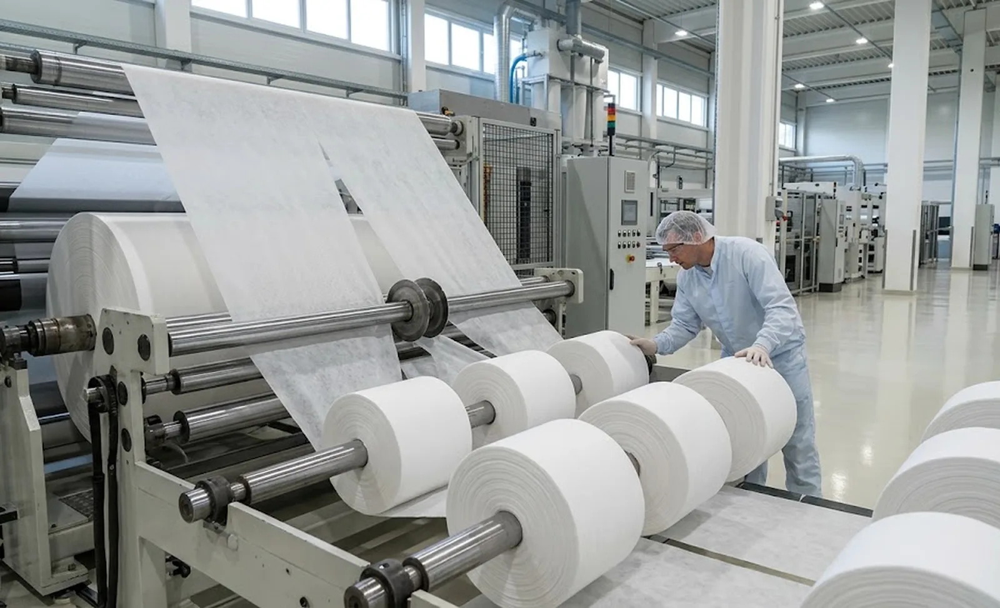
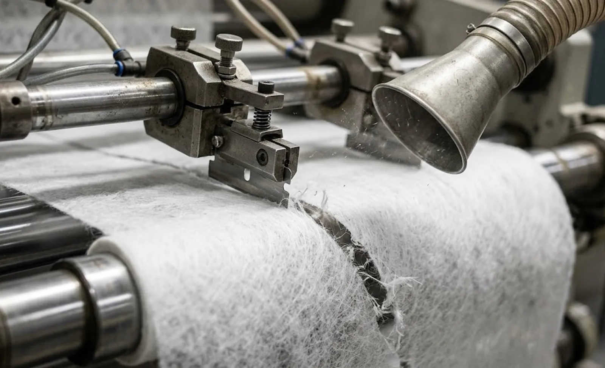

Published October 9, 2026 | By HDPTH Technical Editorial Team

Producers of diapers, sanitary products, medical gowns and wipes buy slitters to cut one family of materials: spunbond and meltblown polypropylene, usually as wide, bulky master rolls that must be converted into precise, clean-edge slit rolls for downstream lines. These materials look easy — light, soft, no sharp coatings — yet they punish the wrong machine in ways film and paper never do. Fibres melt under hot knives, shed fuzz under dull ones, and crush under aggressive winding. This guide covers what makes the material different, which cutting and winding choices matter, and what to verify with your own web before signing a purchase contract.
What makes spunbond and meltblown different
Polypropylene softens at moderate temperature, so friction heat at the knife edge is the enemy: it fuses fibres into a hard bead that sheds into the product later. At the same time the fabric is fibrous and open, so any blade that does not slice cleanly pulls filaments out as fuzz. Bulk compresses, so the winding system must build a roll without densifying the inner layers. Add the logistics of wide master rolls — 2.2 to 3.2 metres and more — and the machine specification becomes a materials question first and a speeds question second. Our nonwoven slitter rewinder buying guide frames the whole decision; here we go deeper on the polymer-specific points.
Knife selection: razor, shear and the fuzz test
Razor slitting dominates lightweight spunbond and meltblown because it slices between fibres with minimal heat and low cost per line, and blade changing is quick across a wide recipe range. Shear slitting earns its place on heavier laminates and composites, where the scissor action gives longer blade life and a cleaner edge under higher loads. Crush cutting rarely suits these materials: the blunt edge displaces fibres and raises fuzz. Whatever the method, the acceptance criterion is measurable edge quality — fuzz height under magnification and absence of fused beads — verified at production speed on your material, not on a supplier demo web. Blade temperature matters on thermal grades; ask how blade holders and automatic blade changing keep edge quality stable across long runs.
Winding soft, bulky rolls
Finished rolls for hygiene converting must stay soft inside and straight outside. Center winding with a carefully tapered tension profile — the discipline in our taper tension guide — protects inner layers from crush, while a controlled lay-on roll keeps outer layers tight enough to prevent telescoping and air entrapment. Combination center-surface systems serve the widest rolls. The verifiable number is roll hardness: ask for a hardness profile across the finished diameter during trials, and compare it against what your downstream unwinder actually tolerates. Our center versus surface winding guide explains the trade-offs in depth.

Unwind, width and line layout
The unwind decision shapes daily operation. Wide master rolls are heavy relative to their strength, so shaftless unwinds with powered core chucks, or well-guided shafted systems, reduce threading risk; the trade-offs appear in our shafted versus shaftless guide. Require web-friendly rollers — large diameter, balanced, with covering that does not mark the fabric — and a spreader roll ahead of the slitting station to keep the fibrous web flat. For layout and material flow around the machine, the line layout guide covers floor planning, hoisting and operator space.
Lint, dust and cleanliness
Every slit line sheds fibre, and fibre that escapes the machine settles into bearings, onto rollers and back into product. Specify extraction at the slit point and downstream of the rewind, sized for your line count and speed, with filters your team can service in minutes — the specification details appear in our dust extraction guide. Pair it with the static control measures in our static control guide, because charged polypropylene throws fibre where suction cannot reach. Cleanliness is also a product-quality issue for medical and hygiene converters: a linty machine sells linty rolls.
What to prove before ordering
Insist on a trial with your own grades at production speed. Measure edge fuzz under magnification on every basis weight you run; check for fusing on thermal grades; record roll hardness profiles across the full finished diameter; and time the changeover between your common recipes. A machine that passes those four checks on your material will pass them every day; one that passes only on the supplier’s demo web will disappoint after delivery. Bring the same acceptance criteria to the factory acceptance test so the contract and the FAT measure the same numbers.
Converting spunbond or meltblown at scale?
Send HDPTH your basis weights, widths and finished roll specifications. We build slitter rewinders for hygiene and medical nonwovens with fuzz-controlled slitting, gentle tapered winding and extraction designed for your line — and we prove it on your material before you order.
Submit Your Project InquiryFrequently asked questions
Is razor slitting or shear slitting better for spunbond nonwovens?
Razor slitting suits lightweight spunbond and meltblown where a clean, low-fuzz cut matters more than edge durability, and where knife cost must stay low across many slit lines. Shear slitting gives longer blade life and cleaner edges on heavier composites but adds setup complexity. The decisive test is fuzz generation at production speed on your material, not catalogue claims.
Why does edge quality matter so much for hygiene nonwoven rolls?
Fuzz and melted burrs on slit edges shed fibres into converters’ unwinding stations, contaminate forming sections and cause visible defects in diapers and sanitary products. A fused or fuzzy edge also weakens the web, increasing breaks at high converting speeds. Specifying a measurable edge-quality limit and verifying it during trials protects downstream output, not just appearance.
What winding pressures work for soft spunbond rolls?
Soft, bulky hygiene rolls need low and carefully tapered winding pressure so the inner layers are not crushed while the outer layers stay straight. Center winding with a controlled lay-on profile, or combination center-surface systems, give the gentlest build. Specify taper tension profiles and verify roll hardness across the diameter during acceptance rather than accepting a fixed torque curve.
How should a machine handle wide master rolls of spunbond?
Wide, lightweight master rolls demand a shaftless or shafted unwind with core chucks rated for the load, web-friendly rollers that avoid creasing, and a spreader roll before slitting to keep fibres flat. Consider upstream logistics too: master roll weight and diameter determine hoisting equipment, floor loading and how safely operators can thread. The unwind decision shapes daily operation more than any other single specification.
What should be proven with my own material before ordering?
Run your actual spunbond or meltblown grades at production speed on the supplier’s machine. Measure edge fuzz under magnification, check blade temperature on thermal grades, verify roll hardness profiles across finished diameters, and record changeover time between your common recipes. A documented trial converts the supplier’s performance claims into evidence you can hold to at FAT.